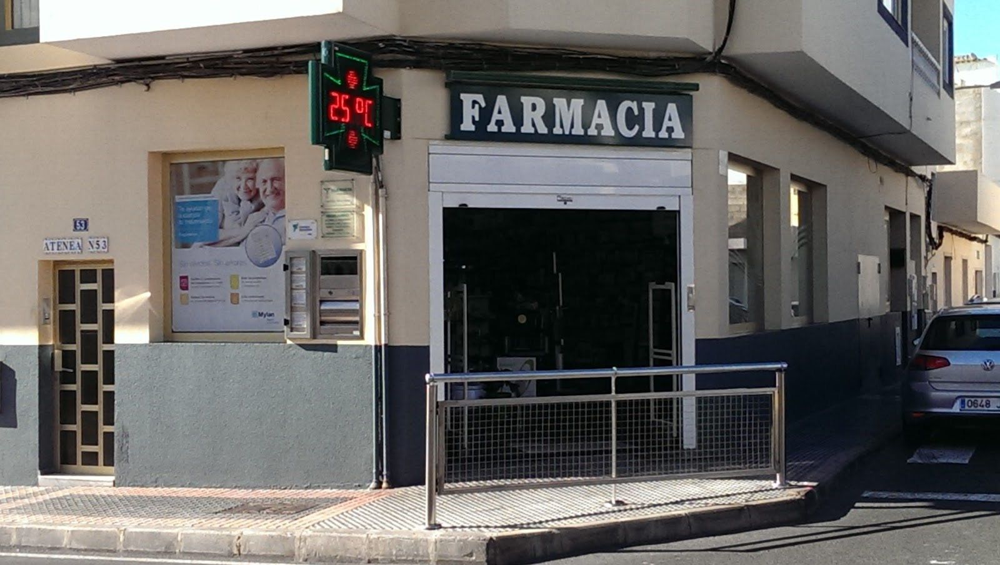
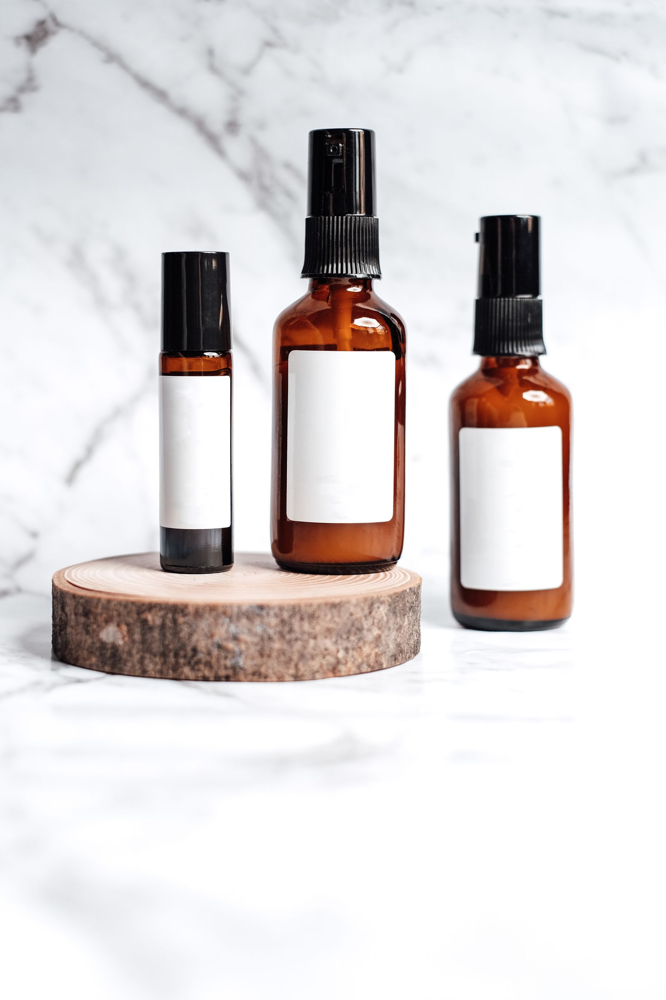
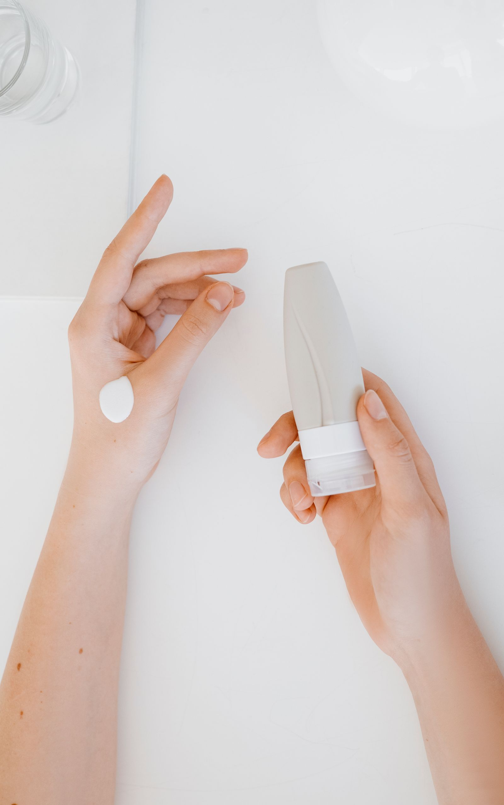
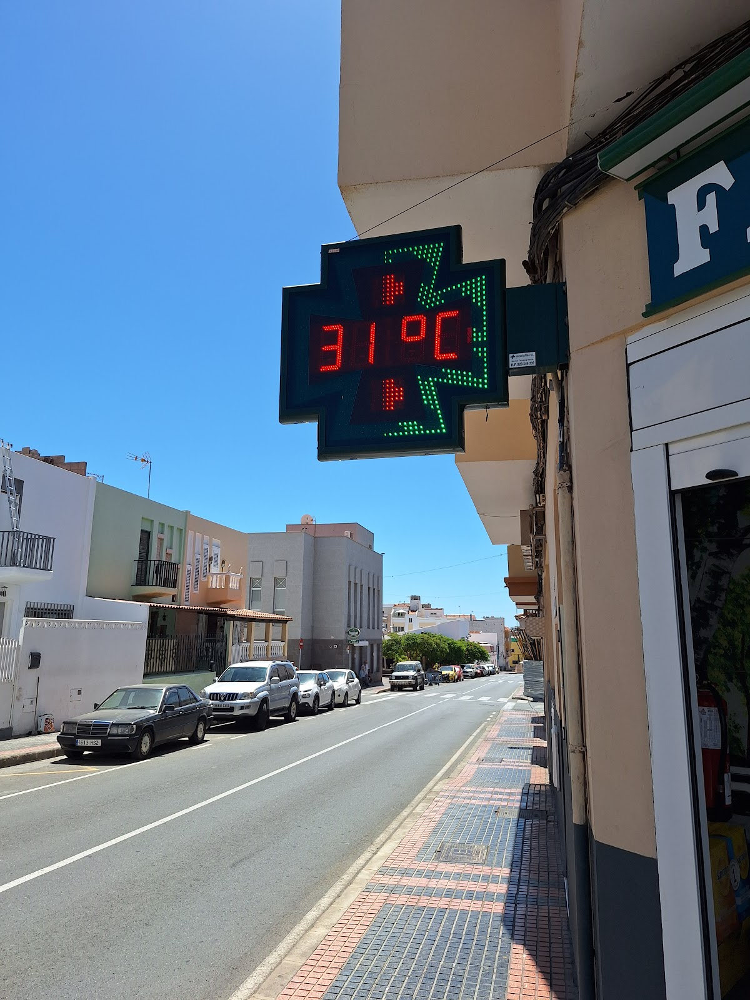

01 / FARMACIA
Atención farmacéutica
Consulta tus dudas sobre medicamentos y productos de farmacia. Estamos para escucharte y orientarte.
Consulta con nosotrosTu farmacia en El Tablero
Atención farmacéutica, cuidado personal y una conversación cuando la necesitas. Bienvenido a Farmacia Carolina Viera Bosa.
Calle Venezuela · esquina Colombia
35109 El Tablero, Gran Canaria

Atención farmacéutica / Dermocosmética / Ortopedia
Descubre nuestros serviciosEl cuidado, en cada detalle
Te orientamos en tus consultas de farmacia y en la elección de productos para tu día a día.

Consulta tus dudas sobre medicamentos y productos de farmacia. Estamos para escucharte y orientarte.
Consulta con nosotros
Cuidado de la piel y rutinas personales. Te ayudamos a consultar las opciones disponibles en la farmacia.
Pregúntanos por tu rutina
Productos para tus pequeños hábitos de cuidado. Consulta las opciones disponibles y encuentra lo que necesitas.
Consultar disponibilidadLas imágenes de dermocosmética y cuidado personal son fotografías de ambiente.

Carolina Viera Bosa
Nos encontrarás en la esquina de las calles Venezuela y Colombia, en El Tablero. Un lugar al que acudir para tus consultas de farmacia y el cuidado personal.
Atención farmacéutica, dermocosmética y ortopedia, con la cercanía de poder hablar directamente con nosotros.
Cuéntanos qué necesitas y consulta tus dudas.
Consulta artículos de apoyo y movilidad.
Nuestra farmacia, nuestro barrio
La historia de una farmacia también se cuenta en lo que comparte con su comunidad. Desde El Tablero, Farmacia Carolina Viera Bosa ha participado en un proyecto educativo sobre sostenibilidad y gestión responsable de medicamentos en secundaria.
En 2026, la iniciativa recibió el Premio Farmacéutico Comunitario y ODS en la categoría medioambiental. Un capítulo de nuestra historia que nos acerca a las aulas y al cuidado del entorno.
Leer la noticia del reconocimiento
Reseñas de la farmacia
Conoce lo que comparten otras personas sobre sus visitas a la farmacia. Si ya nos conoces, también puedes contar cómo fue la tuya.
Opiniones en Google
Lee las reseñas o comparte tu experiencia directamente en nuestra ficha.
Los enlaces se abren en Google. Para publicar una reseña, puede pedirte iniciar sesión.
Ven a vernos
Consulta el horario habitual y encuentra la ruta para llegar desde donde estés.
Horario habitual · Hora canaria
| Lunes a viernes | 08:30–20:30Horario continuo |
|---|---|
| Sábados | 09:00–13:00 |
| Domingos y festivos | Consultar guardias |
Horario publicado por FEFARCAN. En festivos y turnos de guardia puede variar; llámanos antes de venir.
Consultar por teléfonoEl Tablero · Gran Canaria
Esquina con calle Colombia
35109 San Bartolomé de Tirajana
Calle Venezuela · esquina Colombia
El mapa se carga desde Google Maps.Hablemos
Llámanos para consultar productos, disponibilidad u horarios. También puedes seguir las novedades de la farmacia en Facebook.